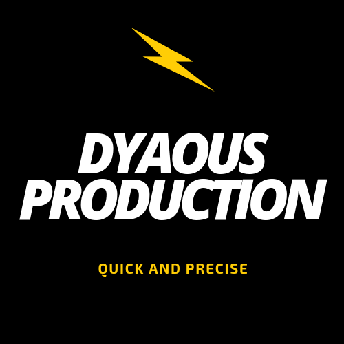

TIPS CAMERA !
-------------------------------------------------------------------------------------
KAMERA TERBAIK DAN WAJIB UNTUK KALIAN GUNAKAN !
1. Canon EOS 5D Mark IV
Canon EOS 5D Mark IV merupakan generasi penerus seri 5D yang memiliki sensor CMOS Full Frame (36 x 24 mm) dan
ketajaman 30 MP.
2. Nikon d3300
adalah penerus dan update dari versi sebelumnya Nikon d3200. Brand Kamera DSLR terbaik ini memiliki user interface yang cocok untuk pemula.
DSLR camera favorit ini dilengkapi fitur-fitur muktahir, seperti 24 MP CMOS Expeed 4 Sensor, ISO range hingga 25600 (Boost), Continous Shoot hingga 5 fps dan kemampuan recording video Full HD 60 fps yang membuatnya menjadi salah satu merk kamera DSLR yang bagus.
3. Nikon D3400
merupakan salah satu merk kamera DSLR Nikon terbaik dengan body yang ramping dan praktis. Kamera ini menggunakan sensor 24 MP CMOS image processor XPEED 4 dengan ISO sensitivity 100-25.600.
4. Nikon D5500
Tipe kamera DSLR terbaik keluaran Nikon selanjutnya adalah Nikon D5500 yang mengusung sensor 24.2 megapiksel DX-format CMOS APS-C tanpa low pass filter optik atau filter anti-aliasing. Dengan ISO range 100-25600 dan foto burst dengan kecepatan 5 fps. Nikon D5500 menggunakan LCD 3.2 inci touchscreen dan built-in Wi-Fi sebegai penyempurna dari kamera ini.
5. Canon EOS 750D
Canon EOS 750D adalah kamera DLSR populer yang dibekali sensor APS-C (22.3 x 14.9 mm) & ketajaman 24 MP.Dengan sensor APS-C (22.3 x 14.9 mm), Canon EOS 750D memiliki rentang sensitifitas ISO 100-12800 dan dapat ditingkatkan lagi hingga 25600, shutter speed 1/4000 detik sampai minimal 30 detik.
6. Fujifilm X-A3
Salah satu kamera Fujifilm terbaik ini hadir dengan fitur modern mulai dari sensor 24,3MP hingga 10 filter serta 11 mode stimulan film. Batereinya irit dan mampu menghasilkan 410 jepretan pada pemakaian normal.

silahkan pencet gambar untuk kembali :)